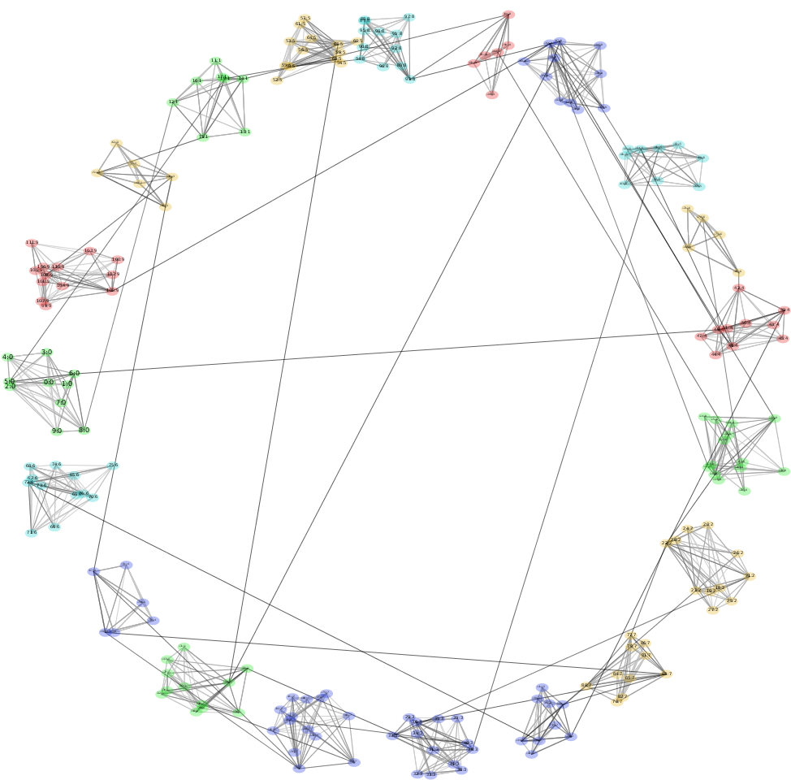
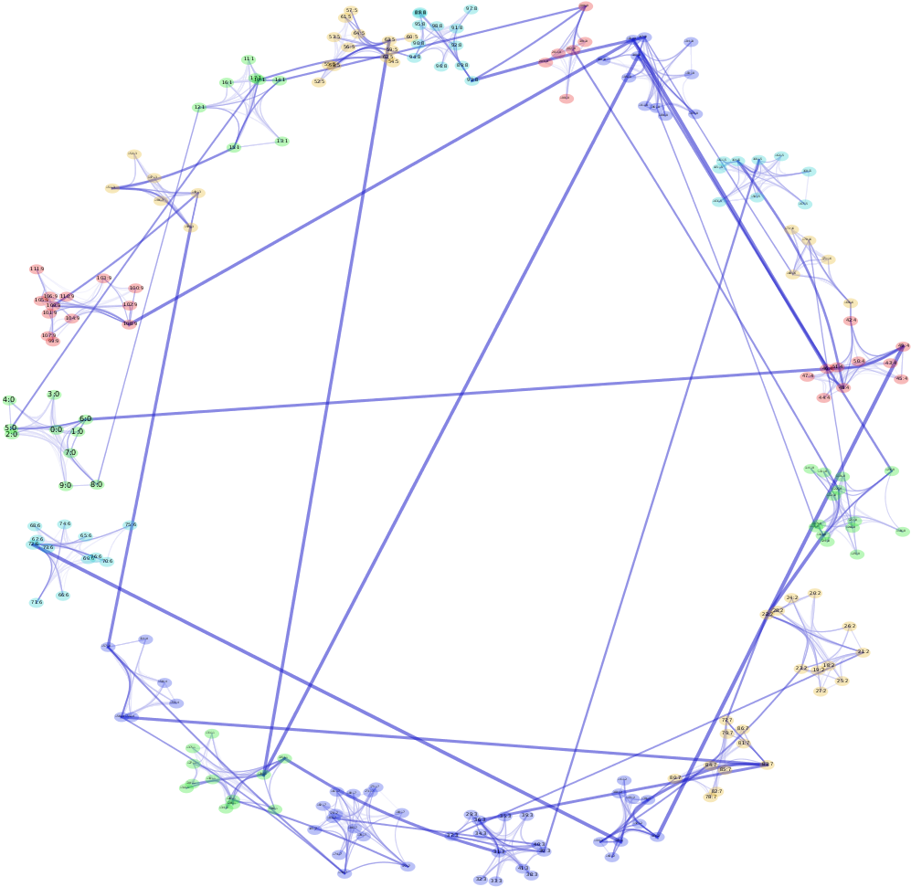
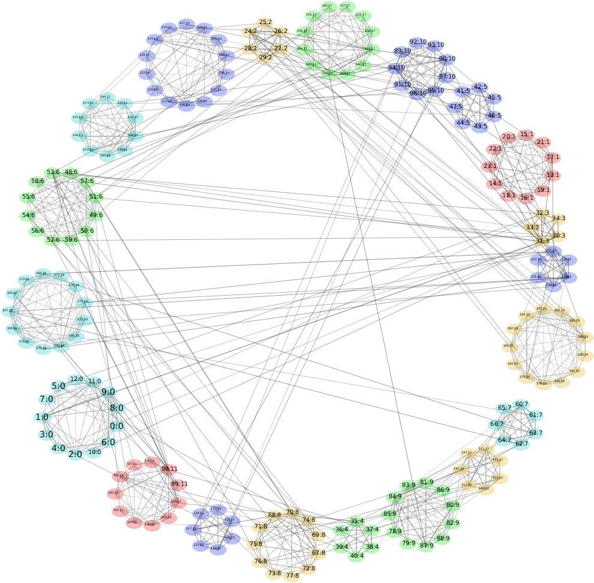
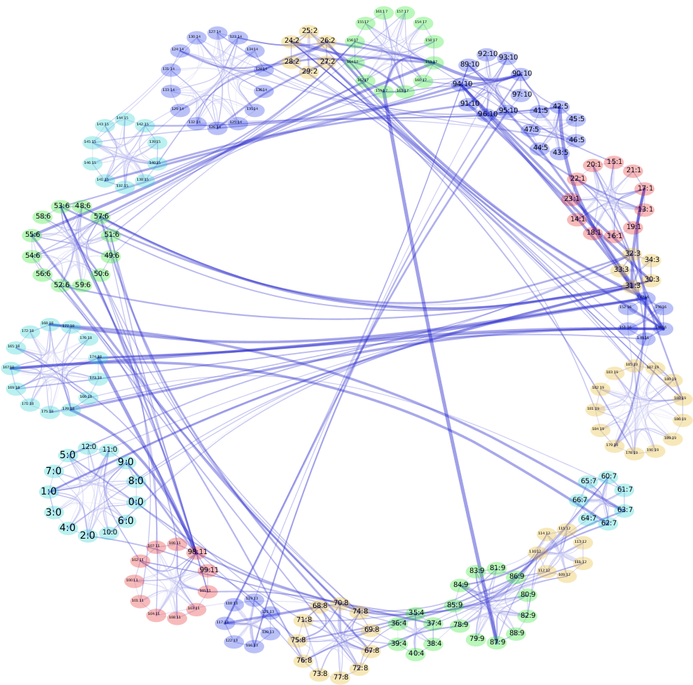
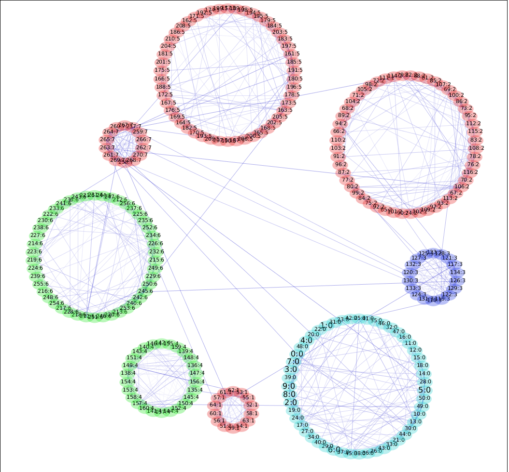
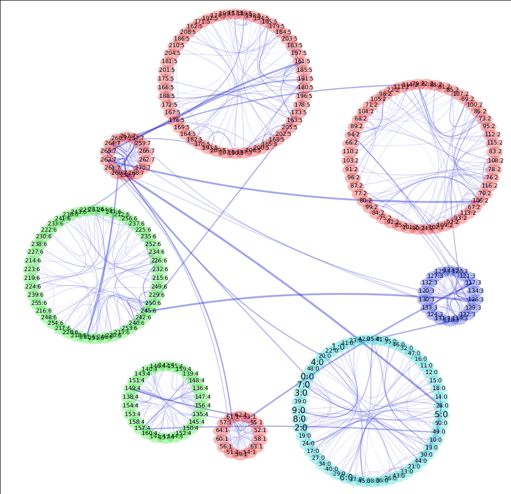

TGI-EB Clustered Graphs
Click to enlarge the figures.Sparse Clustered Graphs


Fig. 1: Sparse clustered graph using Circular-Force layout (after TopoEB)
Dense Clustered Graphs


Fig. 1: Dense clustered graph in Circular-Circular layout (before and after TopoEB)


Fig. 3: Dense clustered graph in Circular-Circular layout (before and after TopoEB)